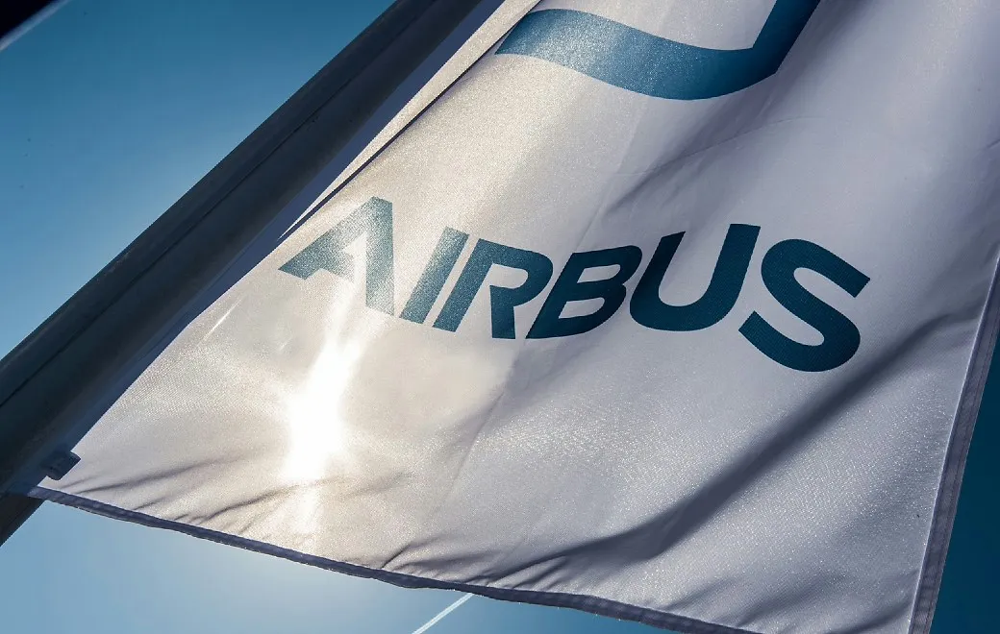

Avrupalı uçak üreticisi Airbus, Çin'in gelecek 20 yıl içerisinde Avrupa ve Kuzey Amerika'yı geride bırakarak "dünyanın en büyük sivil havacılık pazarı" haline geleceğini öngörüyor.
Şinhua'nın haberine göre, Airbus China, ülkedeki ticari sivil havacılık filosunun 2042'de 10 bin 930 uçağa ulaşmasının beklendiğini bildirdi.
Çin'in sivil havacılık hizmetleri piyasasının bu tarihte 54,1 milyar dolar büyüklüğe ulaşacağını öngören şirket, bu ülkenin hacim olarak Kuzey Amerika ve Avrupa'yı geride bırakacağı tahmininde bulundu.
Airbus China'nın müşteri hizmetleri stratejisi ve iş geliştirmeden sorumlu Başkan Yardımcısı Hu Yongdong, Çin'de sivil havacılık endüstrisinin, etkinlik ve kalite bakımından istikrarlı gelişim gösterdiğine işaret ederek bakım, eğitim ve operasyon hizmetleri ve yolcu deneyiminin geliştirilmesi açısından yeni fırsatlar sunduğunu kaydetti.
Çin'de sivil havacılık sektöründe istihdam edilen pilot, teknisyen ve kabin personeli sayısı 2023'te 212 binken bu sayının 2042'de 561 bine ulaşacağı öngörülüyor.